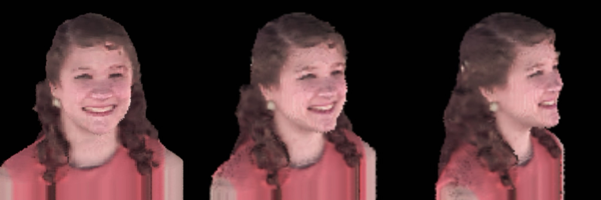
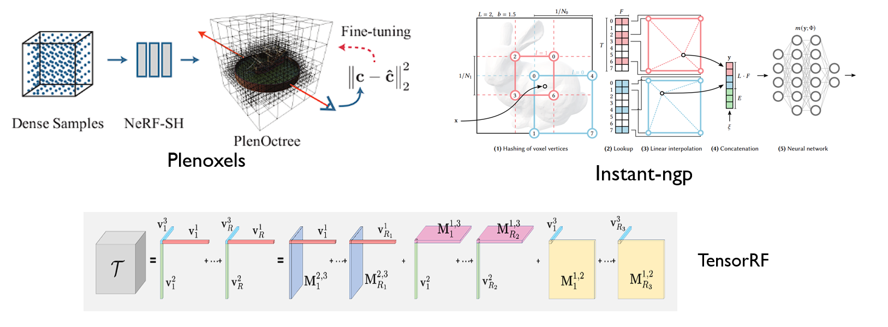
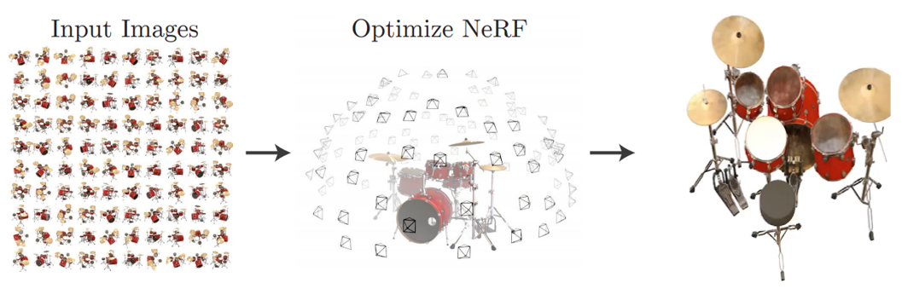
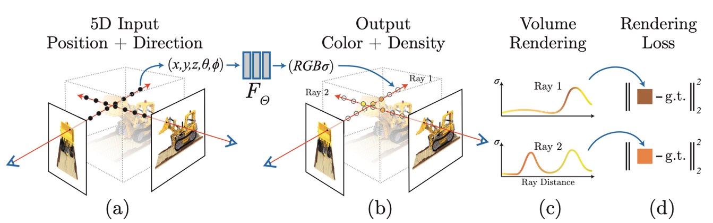
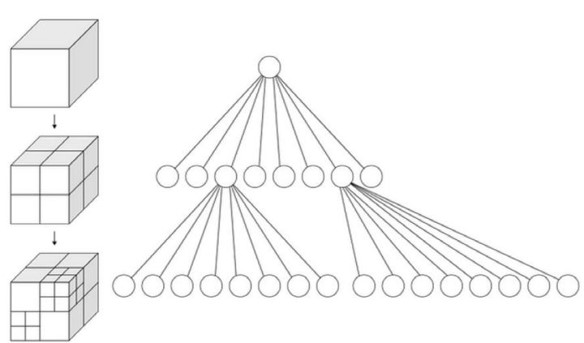

Project introduction

In this coursework of data structure, We utilized voxel and octree data structures to store the pre-trained outputs of the Neural Radiance Field (NERF) and employed a hash table to store high-resolution information. This approach, coupled with the Marching Cube algorithm and tensor decomposition, allowed for high-quality modeling and rendering of images and three-dimensional models. Ultimately, we significantly enhanced the efficiency and quality of NERF for three-dimensional reconstruction.

Neural Radiance Field (NERF)
NERF (Neural Radiance Field) is a representation method for describing three-dimensional objects and scenes. It can be obtained through network learning based on dense images and corresponding camera parameters.


Challenge
In this assignment, although there is no involvement in training deep neural networks, it requires a certain level of understanding of neural networks. It involves various complex algorithms and data structures, including octrees, hash buckets, the Marching Cube algorithm, and tensor decomposition. This task involves optimizing the model after training, making it relatively complex.

Project gains
In this task, I encountered deep neural networks for the first time, gaining insights into their workings and usage. While I didn’t personally train the network, I learned and applied the NERF neural network and optimized it. This experience provided me with a more concrete understanding of neural networks, enabling me to dive into scientific research more efficiently in the future.
About this Post
This post is written by Jason, licensed under undefined.